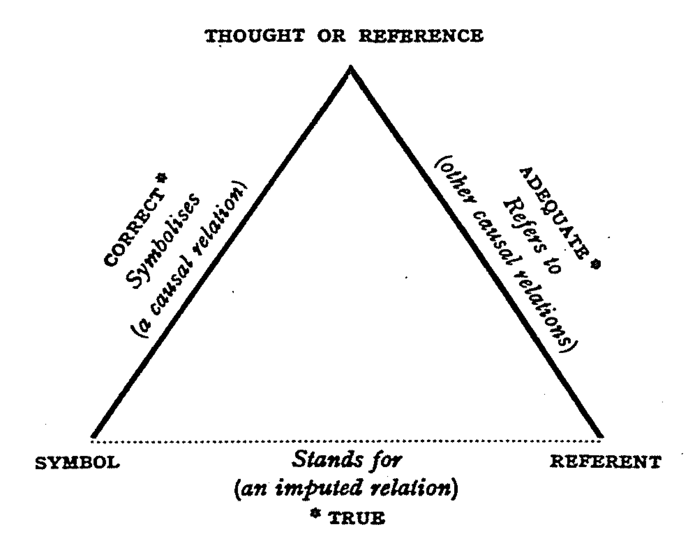

2 — The lexicon
Lexicology and Lexicography
Outline
- What is a word? Criteria and problems
- Names and multi-word expressions
- Paradigms: inflection and derivation
- Practice: Using the OED
Criteria for wordness
Utterance criterion
“A word is the smallest unit which can stand on its own as an utterance.” (Bauer 2022: 1)
- but: mentioning vs use
A: Is it inadvisable or unadvisable?
B: Un.
- grammatical words as utterances (e.g. the) only in special contexts
Phonological criterion
“A word [in isolation] has a single intonational focus point, or movement of pitch.” (Bauer 2022: 2)
- but: sequencing and alternatives affect prosody
- in the beginning vs first vs forever vs for ever
- minimal pair in intonation: record (N) vs record (V) in isolation vs context
Examples:
- He will reˈcord the song. / He bought the ˈrecord.
Semantic criterion
“A word has a single, unitary meaning.” (Bauer 2022: 2)
but: near-synonymous expressions can differ in meaning
finally vs in the end (closure vs narrative sequencing)
Examples:
- We finally arrived after midnight. / In the end, we stayed home.
Orthographic criterion
“words are unitary orthographic units” (Bauer 2022: 2)
- but: spacing and hyphenation vary
- coffee pot vs coffee-pot
- in so far as vs in‑so‑far‑as
- diachronic change: all right vs alright (usage note in OED)
Examples:
- It’s all right. / It’s alright. (nonstandard in some styles).
Dictionary criterion
“A word is listed in the dictionary.” (Bauer 2022: 2)
but: circularity; sub‑lexical units are also listed (e.g. prefix un‑)
Practical definition
“We will accept the spelling conventions of English as defining words […] which has the advantage of being practical.” (Bauer 2022: 3)
Further reading: Haspelmath, Martin. 2023. “Defining the Word.” WORD 69 (3): 283–97. https://doi.org/10.1080/00437956.2023.2237272.
Criteria cheat sheet
| Criterion | Diagnostic | Quick example |
|---|---|---|
| Utterance | standalone? | Un. (context-dependent) |
| Phonology | stress pattern? | first vs for ever |
| Semantic | unitary meaning? | finally vs in the end |
| Orthography | spacing/hyphens? | alright vs all right |
| Dictionary | listed? | un- (sub-lexical but listed) |
Check: is this a word?
alright
→ orthographic controversy; cf. practical definition (accept spelling conventions)
honeybee vs honey bee
→ orthographic criterion; both attested; check dictionary practice
Problems in delineating the term word
Names
- names have unique reference; they pattern differently from common nouns
- examples:
- the Samantha
- This isn’t the Paris I remember. (common‑noun use; compare corpus: “This isn’t the Paris of my youth”)
- roles as noun phrases (no modifiers): the former Argentine

When do names pattern like common nouns?
Multi-word expressions (MWE)
- compounds: blackbird, coffee pot
- phrasal verbs: look up, take off
- collocations: strong tea, make a decision
- idioms & proverbs: kick the bucket, Too many cooks spoil the broth
Compounds
- passion flower; sunflower; wall‑flower
- onomasiological competition: honey bee vs honeybee
Worked example: honey bee vs honeybee
- both forms occur; dictionaries may list one as headword with variant
- evidence to check:
- headword spelling
- variant forms list
- example citations
- OED finding: honeybee (primary); honey bee (variant)
| Evidence | Result |
|---|---|
| Historical precedence | separate words older |
| Current usage | both forms common |
Phrasal verbs
- He passed out.
- He fainted.
Examples:
- She looked up the word. / She looked the word up.
Collocations
Continuum:
- strong: kith and kin
- intermediate: all things considered; as a matter of fact; excuse me; good afternoon; I’m sorry to say; in other words; in the long run
- weak: function‑word sequences like in the
Examples:
- take a quick photo (typical) vs make a quick photo (less typical)
Worked example: collocation strength
- cues for strength:
- fixedness
- semantic transparency
- paradigmatic alternatives
| Phrase | Typical? | Notes |
|---|---|---|
| take a photo | yes | conventional light verb |
| make a photo | variable | regional/genre variation |
| do a photo | rare | atypical in standard usage |
Idioms & proverbs
- Idioms: He kicked the bucket. (= He died)
- Proverbs: Too many cooks spoil the broth. (fixed formulaic)
Examples:
- She spilled the beans. (= revealed the secret)
- A stitch in time saves nine. (cannot reorder)
Worked example: ambiguous case
break down
Form test:
- written as two words → phrasal verb
Stress test:
- stress on particle down → phrasal verb
Meaning test:
- can be literal (car broke down) or figurative (negotiations broke down) → both possible
Conclusion:
- primarily phrasal verb; can form compound noun breakdown
Check: Classifying multi-word expressions
take a photo
→ collocation (light verb construction)
kick the bucket
→ idiom (non-compositional)
Paradigms
Inflectional paradigms
“The term ‘paradigm’ is in general usage, but its usage is often limited. Although paradigm can justifiably be used of any substitution class, it is most often used of substitution classes within the word. Thus the normal use for the term paradigm is the kind of substitution class illustrated in the following example.” (Bauer 2022)
(12): walk, walks, walked, walking
This paradigm illustrates two different kinds of word: there is a sense in which all the items are different word-forms, and a contrasting sense in which the paradigm illustrates different uses of the same word, the lexeme.”
Derivational paradigms
(13)
| deceive | employ | proceed | theorise | |
|---|---|---|---|---|
| Verb | deceive | employ | proceed | theorise |
| Noun | deception | employer | process | theory |
| Adjective | deceptive | employable | processual | theoretical |
Although these examples show individual word families, these series are often generalised over several word families (e.g. theory – theorist – theorise parallels fantasy – fantasist – fantasise).
Inflection vs Derivation: key contrast
| Type | Same lexeme? | Word class change? | Example |
|---|---|---|---|
| Inflection | yes | no | WALK → walks, walked, walking |
| Derivation | no (new lexeme) | often | EMPLOY → employer (N), employable (Adj) |
Visual family tree: derivation
EMPLOY (V)
/ | \
/ | \
employer employable employment
(N) (Adj) (N)Check: Paradigms
- Identify all inflected forms for the lexeme walkv
- walks: 3rd person present
- walking: present participle
- walked: past tense
- walked: past participle
- Find as many derived forms as possible for the base ANALYE.
- N: analysis, analyst
- Adj: analytic, analytical
- Adv: analytically
- V: analyse
- also AmE: analyze, analyzer, analyzable
Practice: Using the OED — Topic & Objective
- Topic: Using dictionary data to examine lexical structure and usage.
- Objective: Identify and describe “problematic” lexical cases via OED evidence.
Tasks
Starter headwords (choose one or explore all):
- alright (spelling variant)
- kick the bucket (idiom)
- honeybee (compound with variants)
What to look for:
- Task A (find two problematic cases): variant spellings? usage labels? date range in citations?
- Task B (compare entries): entry structure? cross-references? examples?
- Task C (extract citations & discuss): fixedness cues? semantic transparency? paradigmatic alternatives?